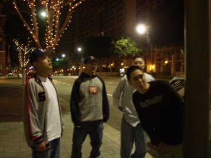

Ktown213: How about a quick intro
of the group members?
Far East Movement:
Uh…one-two…one-two…mic check…ah..ah..can you hear me?…yo!
We got RIOT on the wheels o steel stuffing that soul/funk in ya ear
hole…NEXT!
We got PROHGRESS… (speak on BRUTHA!), he's that loud-mouthed
letter-putter-together-er…uh yeah NEXT!
We got J-SPLIFF, he's Pop-eye with his spinach (TOOT TOOOOOT!)...NEXT!
We got OLOGY…technically technish techn-OLOGY.
FM on ya dial.

Kt213:
The Far-East Movement...how did the group name come about?
FM: It's what we want. Simple. We
are very straight forward people. We want Asians represented in the
mainstream media. But we go by FM now. FM ON YA DIAL. (FM
= Far-East Movement)
Kt213: So how did you guys all meet?
FM: We're all brothers from
another cousin…um…I mean mother. We met during high school even though
we came from different schools around LA. We would freestyle in
parking lots around Los Angeles (we still do) and record songs for fun on
the internet for
www.aznraps.com (we still do).
Kt213: How did it all start for
you guys?
FM: We met a feller named Kublai
Kwon who organizes community events in K-town and he let OLOGY and PROHGRESS
host the Asian Hip-Hop Summit and gave FM our first performance slot.
Really give him props for what he does for the community. It really
inspired us.
Kt213: After your first
performance at the Asian Hip-Hop Summit, how did things work out?
FM: We were super hungry for more
shows and we were introduced to Steve, who was running Club Atlas at the
time. They gave us random slots on Thursday nights to do our thang…
but no more than 20 people ever showed up for us (including friends).
It was really discouraging, so FM put our heads together Voltron-style and
created a charity concert with the help of Climax Entertainment (www.climaxglobal.com)
and Third Floor Radio (www.thirdfloorradio.com)
called Movementality (www.movementality.com).

Kt213:
Tell us about your charity event.
FM: We were able to pull some
top-notch local talent together and found an awesome cause to support, the
Nanoom Fellowship Center, An Asian-Focused Charity that made it ineligible
for government funding gave us plenty of reasons to help them raise money to
purchase air-conditioners during last year's hot summer.
We were straight up GRASS ROOTS… going to every hip-hop event in Southern
California passing out flyers all night, bombing the streets with flyers
like confetti, stage managing all the acts, and even selling the tickets at
the door! HUNGRY! We had the club packed front to back and were
able to give the fellowship center some serious cash.
Kt213: Wow, that's awesome!
Did things look up after that?.
FM: Yeah, that's when things
really came together for our group. The CEO of Climax Entertainment, Carl
"CATCH" Choi, shared our vision and believed in our music. This was a
huge blessing for us. CATCH booked us with shows all over LA, San
Diego, and San Francisco at venues like A.D. in Hollywood, the Henry Fonda
Theater where we opened up for SugaFree (www.sugafreeonline.com),
SOHO, the 10th Annual APEX Awards got to Performed with Kaila Yu (www.kailayu.com)
& Jin (www.holla-front.com),
and even the Queen Mary. This was kind of like "performance boot camp" for
us. At the same time we've done a lot of local underground concerts and also
won some talent shows like PK's Kollaboration this year. We're still
going through it but we're starting to learn the ropes for sure. Trial by
fire, the only way to go.
Kt213: So through Climax, you've
performed all over Southern California, at local clubs and events. What has
that experience been like?
FM: It's been rough, but fun at
the same time. It's rough because almost every show has problems, so
you just have to be live and make the best of the situation. We used
to use a CD during performances for beats, until this one show we did in
Hollywood. Our CD started to SKIP and wouldn't play through. It
was embarrassing, but we just made the best of it and started
freestyling…ha ha ha. There have also been shows where only one mic
worked and the crowd gave us blank stares because they couldn't hear sh*t!
Good times! All the problems are worth it though. Nothing beats
going up on stage and acting a fool…just going up and enjoying ourselves
because we love doing what we do.

Kt213:
Where can we see more of the Far-East Movement in the near future?
FM: Look for us on tour pretty
soon at
www.movementality.com where we will be hitting Seattle, Vancouver, LA,
and SF. Our album should be dropping pretty soon too. We will
also be making appearances at REHAB PROJECTS (www.rehabprojects.com),
a new place for local artists to better their craft. MCs, DJs, graff
artists, and B-boys and girls can all get down because there's a b-boy
floor, a spot for DJ and MC battles, and a stage for live performances.
It's the "village" for FM. It's the new spot to discover or refine
your knowledge of this hip-hop movement. CATCH FM hosting the battles on
some nights.
Kt213: Where do you guys see
yourself in 5 years?
FM: Hmmm…by a tree in the park
writing music and beating on a trash can freestyling. Teaching kids to
river-dance instead of the C-walk, and to be awakened by Morpheus only to
hate him because we like dreaming better.
Kt213: OK, all the ladies want to
know, are you guys single? Who gets all the ladies in your bunch?
FM: We're single…rappers don't get
girls. (wink)
Kt213: What has been the biggest
obstacle for the group so far?
FM: Two things. TIME. Our album
will be coming, but it takes a while because we're all perfectionists and we
do all our own production. Lagg-a-docious. MONEY.
Equipment costs a lot of dough. If ya broke..CLAP YA HANDS!
Kt213: Any advice to other
aspiring Asian Hip Hop artists out there?
FM: If anything, WE could use
advice, but there is one thing. Aspiring artists who really take their
craft seriously should ask themselves, can I give my whole life to the
music? If so, then you're sure to do well. That's it. It's
seriously a full time job.
Kt213: Thanks for the interview
guys, and good luck to FM!
FM: No problem! Thank you
Ktown213!
Listen to FM on
http://www.soundclick.com/fareastmovement
More info at
www.movementality.com |